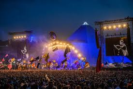

Descubren una Ciudad Subterránea Antigua Bajo las Calles de París
Fecha: 21 de febrero de 2025

Un equipo de arqueólogos ha encontrado una antigua ciudad subterránea que data de más de 3,000 años escondida bajo las calles de París.

Científicos Crean la Primera Planta con Energía Solar Artificial
Fecha: 20 de febrero de 2025

Un grupo de científicos de la Universidad de Cambridge ha desarrollado la primera planta que utiliza energía solar artificial para su crecimiento.
El Mayor Festival Musical Virtual del Mundo Atrae a 10 Millones de Asistentes
Fecha: 15 de febrero de 2025
El festival "E-Sound" ha roto récords al atraer a más de 10 millones de asistentes virtuales de todo el mundo.